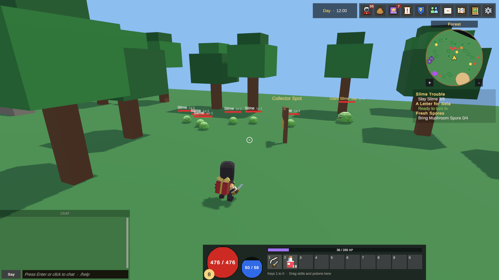

操作模式
KitARPG 有三种操作模式：俯视角（Diablo 风格）、自由视角和第三人称。本页介绍每种模式对玩家意味着什么、影响它的所有设置、服务器检查的内容，以及如何在单人模式和 MMO 中切换模式。
操作模式是什么
操作模式决定三件事：镜头如何跟随玩家，玩家如何行走，以及攻击和技能瞄准哪里。其他一切（战斗规则、技能、物品、任务、HUD）在每种模式下都相同。
| 模式 | 镜头 | 光标 | 瞄准 | 行走 | Space |
|---|---|---|---|---|---|
| Top-down (click or keys) | 玩家上方的固定角度，Diablo 风格 | 自由 | 鼠标 | 点击地面，或 WASD 和方向键 | 攻击最近的敌人 |
| Free camera (cursor, right button turns) | 环绕在玩家身后；按住右键转动 | 自由 | 鼠标 | WASD 和方向键 | 闪避 |
| Third person (crosshair aim) | 环绕在肩膀上方；鼠标转动它 | 隐藏，显示准星 | 屏幕中心 | WASD 和方向键 | 闪避 |
同样的场景在三种模式下都能玩。地图加载时，套件会把当前模式的镜头和输入组件放到地图的主摄像机上，并关闭其他组件。在服务器上，它对网络管理器对象做同样的事。你永远不需要为了换模式而重新构建场景。
地图服务器和每个客户端必须使用同一种模式。另一种模式的客户端在进入地图时会被拒绝（参见服务器检查）。
选择模式
模式是游戏设置，不是玩家设置。玩家无法切换它。
- 打开 KitARPG > Game Settings（或 KitARPG 窗口的 Game Settings 页面）。
- 在 Game mode 部分，选择 Control Mode（
controlMode）：Top-down (click or keys)、Free camera (cursor, right button turns) 或 Third person (crosshair aim)。你自己代码添加的模式会按名称出现在同一个列表中。 - 对于自由视角和第三人称，设置下方的镜头资源。
- 在 MMO 中，重新构建地图服务器并重启服务（参见单人模式与 MMO）。
| 字段 | 作用 | 默认值 |
|---|---|---|
Control Mode（controlMode） |
游戏的玩法。以名称保存：TopDown、FreeCamera 或 ThirdPerson。留空表示 TopDown。 |
TopDown（示例的 KitNetwork 预制体出厂设为 FreeCamera） |
Third Person Camera（thirdPersonCamera） |
第三人称的 Camera Settings 资源。留空：使用套件的内置默认值。 | 示例：Camera Third Person |
Free Camera（freeCamera） |
自由视角的 Camera Settings 资源。留空：使用套件的内置默认值。 | 示例：Camera Free |
这些字段位于 KitNetwork 预制体的 GameInstance 组件上，Game Settings 编辑的就是它。参见 Game Settings。
俯视角
俯视角是点击移动，由服务器在 NavMesh 上为角色寻路。它也可以用键盘玩，类似双摇杆风格。
玩俯视角
| 输入 | 结果 |
|---|---|
| 左键点击地面 | 走到那里。按住按钮会持续朝指针方向移动。 |
| 左键点击怪物 | 走到攻击范围内并持续攻击，直到它死亡或你下达其他命令。再次点击同一目标会继续挥击。 |
| 左键点击另一位玩家 | 在 PvP 或决斗允许时攻击对方（参见 PvP 与决斗）。 |
| 左键点击地上的掉落 | 走过去并拾取。 |
| 左键点击 NPC | 走过去并打开对话。 |
| 左键点击未在战斗的收税官 | 通过它的位置与它对话。 |
| 右键点击另一位玩家 | 打开玩家菜单（交易、队伍、好友、决斗等）。 |
W A S D 或方向键 |
相对镜头朝该方向行走。 |
Space |
攻击 10 米内最近的敌人，略微优先前方的敌人。按住时，当前敌人倒下后会转向下一个。 |
F |
拾取 4 米内最近的掉落，没有掉落时与最近的 NPC 对话。掉落总是优先。 |
| 鼠标滚轮 | 在 5 到 18 米之间缩放。指针在窗口上时没有作用，所以滚动背包不会移动镜头。 |
1 到 0 |
快捷栏格子 1 到 10：施放该处的技能或使用该处的物品。 |
施放技能时，俯视角会自动走到技能范围内，到达后施放。目标在墙后时，会继续走，直到能看到目标。任何新命令（点击、方向键、另一次攻击）都会停止正在进行的挥击或施法。施法已完成的技能会继续生效。
在聊天中输入时，移动键没有作用，聊天打开时按住的键会让角色停下。死亡的角色忽略所有移动命令。
移动：点击、按键或两者
每位玩家可以在 Settings > Controls > Movement 中选择行走方式：
| 选项 | 作用 |
|---|---|
| Click and keys | 两者都可用。按键行走时，按住的鼠标按钮不会与之冲突。 |
| Click only | 按键不能行走。Space 和 F 仍然可用。 |
| Keys only | 点击地面不会行走。点击怪物、掉落、NPC 和玩家仍然有效。 |
该设置按电脑保存在 PlayerPrefs（KitARPG.Movement）中。它的初始值来自 TopDownInput 组件。
TopDownInput 字段
TopDownInput 位于每个地图场景的主摄像机上（示例的 Town、Forest 和 Crypt 都有）。在那里修改它来调整一张地图。
| 字段 | 作用 | 默认值 |
|---|---|---|
Controls（controls） |
点击和按键、仅点击或仅按键。玩家可以选择时是初始选项，不能选择时是唯一选项。 | ClickAndKeys |
Player Chooses（playerChooses） |
在 Settings > Controls 中添加 Movement，让每位玩家自己选择。 | 开 |
Attack Key（attackKey） |
攻击最近的敌人。 | Space |
Interact Key（interactKey） |
拾取最近的东西或与之对话。 | F |
Key Attack Range（keyAttackRange） |
Space 在玩家周围寻找敌人的米数。 |
10 |
Key Interact Range（keyInteractRange） |
F 在玩家周围寻找掉落或 NPC 的米数。 |
4 |
Key Repeat Seconds（keyRepeatSeconds） |
按住按键时方向更新的间隔秒数。新方向会立即发送。 | 0.12 |
Ground Mask（groundMask） |
点击可以落在的层。 | Everything |
Repeat Seconds（repeatSeconds） |
按住鼠标按钮时转向更新的间隔秒数。 | 0.15 |
View（view） |
用于点击的摄像机。留空：主摄像机。 | 空 |
Player Menu Button（playerMenuButton） |
在另一位玩家身上打开菜单的鼠标按钮：0 左键，1 右键，2 中键。 | 1 |
Player Pick Pixels（playerPickPixels） |
在 1080p 下，指针距离玩家身体多少像素内仍能选中对方。玩家没有点击碰撞体，所以选取在屏幕上进行。 | 40 |
TopDownCamera 字段
TopDownCamera 位于地图摄像机上，与 TopDownInput 在一起。
| 字段 | 作用 | 默认值 |
|---|---|---|
angles |
镜头的旋转角度（向下、环绕、翻滚）。 | (50, 45, 0) |
distance |
地图开始时与玩家的距离（米）。 | 9 |
zoomRange |
滚轮或双指缩放的最近和最远距离。 | 5 到 18 |
followSharpness |
跟随玩家的紧密程度。越高越紧。 | 10 |
俯视角镜头从不转动。它看向玩家脚上方一米处。
TopDownServer 字段
服务器部分 TopDownServer 位于地图服务器对象上（示例中在 Server 场景）。缺少它时，套件会用这些默认值添加它。
| 字段 | 作用 | 默认值 |
|---|---|---|
Move Speed（moveSpeed） |
职业没有提供移动速度数值时的行走速度。 | 3.5 |
Max Move Distance（maxMoveDistance） |
比这更远的点击会被拉近到这个距离。瞄准更远处的攻击、对话和技能会被忽略。 | 40 |
Max Messages Per Second（maxMessagesPerSecond） |
每秒的移动和动作请求数，超过则连接被当作刷屏断开。 | 20 |
Chase Repath（chaseRepath） |
追击目标时更新路径的间隔秒数。 | 0.25 |
Steer Timeout（steerTimeout） |
没有新方向时，按键方向持续行走的秒数，以防松开按键的消息没有到达。 | 0.5 |
自由视角和第三人称

自由视角和第三人称共用相同的输入、镜头和服务器组件。它们在光标、瞄准和角色朝向上有所不同。
玩自由视角
| 输入 | 结果 |
|---|---|
W A S D 或方向键 |
相对镜头行走。 |
| 按住鼠标右键并移动 | 转动镜头。转动时光标隐藏。 |
| 右键点击但不转动 | 在指针下的玩家身上打开菜单。按下时间短于 0.35 秒且鼠标几乎没动才算点击。 |
| 左键点击 | 拾取指针下的掉落，或与指针下的 NPC 或收税官对话。在其他地方则朝指针挥击。按住时持续挥击。 |
Space |
闪避。 |
F |
拾取 4 米内最近的掉落，或与最近的 NPC 对话。 |
| 鼠标滚轮 | 在镜头的缩放范围内缩放。 |
1 到 0 |
快捷栏格子。技能朝指针施放。 |
玩第三人称
| 输入 | 结果 |
|---|---|
| 移动鼠标 | 转动镜头。光标隐藏，屏幕中央显示准星（一个带点的小圆环）。 |
按住 Left Alt |
按住时恢复光标，用于点击 HUD。打开任何窗口、对话框、设置或聊天也会恢复光标。准星仍留在屏幕上，变淡。 |
| 左键点击 | 拾取、对话或挥击准星覆盖的东西。按住时持续挥击。 |
| 右键点击 | 在准星下的玩家身上打开菜单。 |
W A S D、Space、F、滚轮、1 到 0 |
与自由视角相同。 |
自由瞄准
在自由视角和第三人称中，什么都不需要目标。左键点击会朝瞄准点发出一次挥击，并把瞄准处的敌人作为提示。由服务器决定命中谁：
- 近战武器（攻击距离不超过 3 米）命中瞄准方向两侧 60 度弧内最近的敌人，距离相同时最靠前的优先。
- 远程武器（攻击距离超过 3 米）命中瞄准线上 0.9 米以内的第一个敌人。
- 只有当该敌人确实在那个方向、在范围内且在视线内时，客户端的提示才有效。
- 那里没有敌人时，角色对空挥击：播放攻击动画，消耗弹药，攻击计时器继续运行。
按住按钮时，客户端每 0.25 秒重复一次挥击。服务器仍按武器的真实攻击速度计算，所以按住不会让攻击变快。
技能也朝瞄准点施放。服务器会把该点截断到技能范围内，并在墙处停下。瞄准空处的单体敌对技能会选中瞄准线上的第一个敌人；如果没有，施法失败。范围技能和地面技能仍会先显示预览（参见技能瞄准）。
角色的朝向
角色面向它行走或攻击的方向。攻击或施法后，它会在 0.6 秒内（faceAimSeconds）继续面向目标，即使正朝另一方向走，所以用 S 后退并攻击时仍会显示朝向敌人的攻击。
在第三人称中使用近战武器时，行走中 的挥击朝角色行走的方向，而不是镜头看向的方向。站着不动时，朝准星方向。射击和技能总是朝准星方向。
第三人称增加了一个玩家选项 Settings > Controls > Turn with the camera：角色始终面向镜头看向的方向，用于侧移。默认关闭，只在第三人称中显示。
闪避
Space 在 0.3 秒内朝你行走的方向闪避 4 米，站着时朝正前方。遇到第一面墙时停下，并取消当前攻击。服务器保留冷却（1.2 秒），所以按得更快也没有用。闪避不会让角色无敌。眩晕、定身、正在进行的施法和超重的背包会阻止闪避。
移动与预测
按下按键时角色会立即移动：客户端运行固定的 tick（每秒 30 次），自己在 NavMesh 上移动，并把每个 tick 发送给服务器。服务器在同一个 NavMesh 上执行同样的步骤，每 0.05 秒回复真实位置。回复不一致时，客户端从该位置重放服务器尚未处理的 tick：小的差异会平滑消除，超过 6 米的差异则直接跳过去。
其他玩家通过正常的网络同步看到你的角色。摇杆推到一半时以一半速度行走。
没有跳跃：移动保持在 NavMesh 上，沿其边缘滑动，斜坡和楼梯会带着角色上下。
ThirdPersonInput 字段
当前模式运行时，ThirdPersonInput 和 ThirdPersonCamera 会在运行时添加到地图的主摄像机上。要修改它们的字段，把它们添加到你地图场景的摄像机上并在那里设置。
| 字段 | 作用 | 默认值 |
|---|---|---|
view |
用于瞄准的摄像机。留空：主摄像机。 | 空 |
orbit |
读取镜头方向的 ThirdPersonCamera。留空：同一对象上的那个。 |
空 |
Dodge Key（dodgeKey） |
闪避。 | Space |
Interact Key（interactKey） |
拾取最近的东西或与之对话。 | F |
Interact Range（interactRange） |
F 在玩家周围寻找掉落或 NPC 的米数。 |
4 |
Swing Repeat（swingRepeat） |
按住按钮时挥击的间隔秒数。服务器保持真实的攻击速度。 | 0.25 |
turnSharpness |
角色转向新朝向的速度。 | 14 |
Face Aim Seconds（faceAimSeconds） |
角色持续面向它攻击或施法对象的秒数。 | 0.6 |
Snap Distance（snapDistance） |
与服务器偏差多少米时，角色直接跳过去而不是平滑过渡。 | 6 |
Correction Sharpness（correctionSharpness） |
小的修正平滑消除的速度。 | 10 |
ThirdPersonCamera 字段
| 字段 | 作用 | 默认值 |
|---|---|---|
settings |
仅用于这台摄像机的 Camera Settings 资源。留空：使用 Game Settings 中当前模式的资源。 | 空 |
blockers |
镜头无法穿过的层。怪物、玩家、掉落和触发器从不阻挡它。 | Default 层 |
blockerRadius |
用于寻找玩家身后墙壁的球体半径。 | 0.25 |
Look Button（lookButton） |
自由视角：按住以转动的鼠标按钮。0 左键，1 右键，2 中键。 | 1 |
Free Cursor Key（freeCursorKey） |
第三人称：按住以恢复光标。 | Left Alt |
当墙挡在镜头和玩家之间时，镜头立即拉近，墙消失后再平滑拉远。
ThirdPersonServer 字段
ThirdPersonServer 同时服务于自由视角和第三人称。它在运行时添加到地图服务器对象上；要修改它的字段，自己把它添加到那里。
| 字段 | 作用 | 默认值 |
|---|---|---|
Move Speed（moveSpeed） |
职业没有提供移动速度数值时的行走速度。 | 3.5 |
Max Messages Per Second（maxMessagesPerSecond） |
每秒的攻击、挥击、技能、拾取和对话次数，超过则连接被当作刷屏断开。 | 20 |
Max Queued Ticks（maxQueuedTicks） |
每位玩家等待处理的移动 tick 数。多出的会被丢弃，客户端会自行修正。 | 12 |
Ack Seconds（ackSeconds） |
向所有者回复位置的间隔秒数。 | 0.05 |
Reach Slack（reachSlack） |
超出攻击或技能范围但仍被接受的米数，用于目标移动了一步的情况。 | 0.6 |
Melee Arc（meleeArc） |
近战挥击寻找敌人的角度的一半（度）。 | 60 |
Aim Width（aimWidth） |
远程攻击或单体技能在瞄准线两侧寻找敌人的米数。 | 0.9 |
dodgeDistance |
闪避的距离（米）。 | 4 |
dodgeSeconds |
闪避所需的秒数。 | 0.3 |
dodgeCooldown |
两次闪避之间的秒数。 | 1.2 |
镜头设置
自由视角和第三人称模式的取景是游戏设计的一部分，对每位玩家都一样，所以没人能通过把镜头拉远获得优势。它来自一个 Camera Settings 资源。
创建方法：Create > KitARPG > Camera Settings，然后在 Game Settings 中把它指定给 Third Person Camera 或 Free Camera。示例在 Samples/Starter/Data 中有 Camera Third Person 和 Camera Free。
镜头每帧都读取该资源。在 Play 模式下编辑它来尝试数值：镜头会立即跟随，而且 Play 结束后改动仍保留，因为该资源是你项目中的一个文件。
| 字段 | 作用 | 默认值 |
|---|---|---|
Distance（distance） |
游戏开始时在玩家身后的米数，0.5 到 30。会被限制在缩放范围内。 | 6 |
Zoom Range（zoomRange） |
滚轮缩放的最近和最远距离。两个值相同会锁定缩放。最近距离不低于 0.5。 | 2 到 14 |
Height（height） |
镜头看向脚上方的米数，-2 到 6。 | 1.6 |
Side（side） |
在玩家旁边的米数，大于零为右侧，小于零为左侧，-4 到 4。让玩家偏离准星。 | 0.6 |
Field Of View（fieldOfView） |
镜头视野，30 到 110 度。 | 60 |
Turning（turning） |
Free 可以完全转一圈。Limited 保持在 Yaw 的 Yaw Range 之内。Fixed 始终朝向 Yaw。 | Free |
Yaw（yaw） |
Limited 或 Fixed 时镜头朝向的世界方向（度），也是它的起始方向。45 呈现等距视角。 | 0 |
Yaw Range（yawRange） |
Limited：可以向 Yaw 左侧（小于零）和右侧转动的度数。 | -45 到 45 |
Pitch（pitch） |
镜头开始时向下看的度数，-89 到 89。 | 18 |
Lock Pitch（lockPitch） |
让镜头保持在 Pitch，从不倾斜。 | 关 |
Pitch Range（pitchRange） |
向上（小于零）和向下能看多远。 | -35 到 75 |
Sensitivity（sensitivity） |
每单位鼠标移动对应的度数。玩家可在 Settings 中缩放。 | 3 |
Follow Sharpness（followSharpness） |
追上玩家的速度。越高越紧。 | 18 |
示例资源使用以下数值：
| 资源 | Distance | Zoom range | Height | Side | Field of view | Pitch |
|---|---|---|---|---|---|---|
Camera Third Person |
6 | 2 到 14 | 0.84 | 0.4 | 45 | 18 |
Camera Free |
5（从缩放最小值 7 开始） | 7 到 13 | 1.6 | 0 | 45 | 45 |
Turning 设为 Fixed 并开启 Lock Pitch，会得到一个完全不能转动的镜头。此时即使在第三人称中光标也保持自由并用鼠标瞄准，从而得到一个带 WASD 移动和闪避的固定角度动作镜头。
玩家镜头选项
玩家只能在 Settings > Controls 中修改鼠标手感。这些选项在自由视角和第三人称中出现：
| 选项 | 作用 | 默认值 |
|---|---|---|
| Mouse sensitivity | 缩放资源的 Sensitivity，20% 到 300%，步长 10。 | 100 |
| Invert mouse | 向上移动鼠标时向上看。 | 关 |
| Turn with the camera | 仅第三人称：角色面向镜头看向的方向。 | 关 |
它们按电脑保存在 PlayerPrefs 中。参见玩家设置。
技能瞄准
在每种模式中，范围技能和地面技能都会先显示落点：
- 玩家周围一个淡白色圆环显示技能范围。
- 技能的圆形、锥形或直线跟随瞄准。可以施放时为金色，点超出范围时为红色。俯视角从不显示红色，因为它会自己走到范围内。
- 左键点击或相同的快捷栏按键施放。右键点击或
Escape取消。
自身技能和单体技能（瞄准敌人或盟友）立即施放。不在瞄准时，敌人脚下的红色圆环标出你的攻击或技能会命中的那个。
喜欢速度的玩家可以选择 Settings > Controls > Skills > Cast at once：范围技能直接朝瞄准点施放，没有预览。默认是 Show the area, then click。该选择保存在 PlayerPrefs（KitARPG.QuickCast）中。
技能发送前在客户端检查的条件，用来省去一次往返：技能已学会、不是被动技能、没有其他施法正在进行、冷却已结束且法力足够。对应消息是 "You haven't learned that"、"That can't be cast"、"Already casting"、"Skill isn't ready" 和 "Not enough mana"。在俯视角中，指针下没有敌人时，敌对技能会显示 "No target"。服务器会再次检查所有条件。参见技能和战斗。
服务器检查
客户端只发出请求。每种模式的服务器部分都会检查每个请求：
| 检查 | 俯视角 | 自由视角和第三人称 |
|---|---|---|
| 模式一致 | 客户端随地图票据发送它的模式。其他模式会以 mode_mismatch 被拒绝。 |
相同 |
| 请求频率 | 每秒超过 20 个请求会把连接当作刷屏断开。 | 动作相同。移动 tick：每秒超过 70 个会断开远程客户端。 |
| 错误的数字 | 不是有限数的点和方向会被忽略。 | 相同 |
| 速度 | 服务器以它自己的速度为角色寻路。 | tick 按每位玩家的实时预算运行：更快地发送 tick 永远不会移动得更快。每个 tick 最多计 0.1 秒，旧的 tick 编号会被丢弃。 |
| 移动受阻 | 眩晕、定身、击退、死亡和超重的背包会停止行走。超重的玩家最多每 3 秒看到一次超重消息。 | 相同，此外正在进行的施法会让施法者停在原地。 |
| 距离 | 超过 40 米的点击会被拉近；超过 40 米的目标、NPC 和技能点会被忽略。角色走完剩下的路。 | 什么都不会自己走动：攻击需要攻击距离加 0.6 米且在视线内（"Too far"、"Not in sight"），对话需要在 NPC 的对话范围内（"Too far"），拾取需要在掉落的拾取范围内，技能需要在其范围内（"Out of range"）。 |
| 目标 | 只接受该客户端能看到的目标；敌人只在确实是敌人时（包括 PvP 和决斗）才接受。 | 相同 |
| 来自其他模式的命令 | 不处理。 | 俯视角的移动命令会被忽略，而不是断开客户端。 |
视线遵循 Game Settings > Combat（参见战斗）。
单人模式与 MMO
单人模式。 游戏是它自己的主机，所以客户端和服务器总是使用同一种模式。在自由视角和第三人称中没有预测：主机每帧发送一个 tick，并在同一进程中移动角色。在 Game Settings 中修改模式并按 Play 即可。
MMO。 地图服务器是独立的构建。模式在构建时从 Game Settings 编译进去。
- 在 Game Settings 中修改 Control Mode。
- 在 KitARPG > Play and Servers 中重新构建地图服务器（Linux 和 Docker 用 KitARPG > Build）。
- 重启服务。
- 构建并发布新的客户端。
与地图服务器模式不同的客户端会在门口被拒绝。标题画面显示 "The server plays a different game mode. Update the game."。在编辑器中，Console 也会说明地图服务器使用的是另一种模式，并提示你重新构建它。参见 Play and Servers 和构建。
Input System 和 Input Manager
套件通过 KitInput 读取键盘和鼠标，它根据项目的 Active Input Handling，同时支持 Input System 包和旧的 Input Manager。上面所有按键和鼠标按钮在两者中的表现都一样。在 Input System 下加载时，带 StandaloneInputModule 的场景会得到一个 InputSystemUIInputModule。
在手机和平板上，各模式改为读取屏幕上的操作控件。参见触控操作。
常见设置
经典 Diablo 风格游戏
- Game Settings > Game mode > Control Mode：Top-down (click or keys)。
- 在每台地图摄像机的
TopDownInput上，Controls 保持ClickAndKeys，Player Chooses 保持开启。 - 要修改镜头角度或缩放，编辑每台地图摄像机上的
TopDownCamera。
仅点击，不用 WASD
- 在每台地图摄像机的
TopDownInput上，将 Controls 设为 Click，并关闭 Player Chooses。 Space和F仍然可用。清空 Attack Key 和 Interact Key（设为None）也可以把它们移除。
带准星的动作游戏
- Control Mode：Third person (crosshair aim)。
- 给 Third Person Camera 指定一个 Camera Settings 资源。从示例的
Camera Third Person开始。 - 按 Play，打开该资源，调整 Distance、Height 和 Side，直到准星不被角色挡住。
- 在 MMO 中，重新构建地图服务器。
带 WASD 和闪避的等距镜头
- Control Mode：Free camera (cursor, right button turns)。
- 在 Free Camera 资源中，将 Turning 设为 Fixed，Yaw 设为 45，Pitch 设为约 50，并开启 Lock Pitch。
- 镜头不能转动，光标用于瞄准，
Space闪避。
常见错误
- 修改了模式但没有重新构建地图服务器。 客户端会收到 "The server plays a different game mode"。每次修改模式后都要重新构建并重启服务。
- 期望玩家切换模式。 模式属于游戏。玩家只能选择俯视角中的移动方式、技能施放方式、鼠标灵敏度、反转鼠标和随镜头转向。
- 在 Play 中编辑 Camera Settings 资源并期望它会恢复。 改动会保留，和任何资源一样。如果想保留原版，在试验前先复制该资源。
- 设置不在场景中的
ThirdPersonCamera或ThirdPersonServer的字段。 它们在运行时以默认值添加。把它们添加到地图摄像机或地图服务器对象上，才能保留你的数值。 - 地图上没有 NavMesh。 每种模式都在 NavMesh 上行走。没有烘焙
NavMeshSurface的地图上，谁都无法移动。参见地图。 - 第三人称中
Side值过大。 镜头的侧向偏移在狭窄的路上可能把它推进墙里；镜头会拉近，但画面会跳动。保持在 1 米以下。 - 期望有跳跃或无敌闪避。 套件的各模式中都没有这两样。